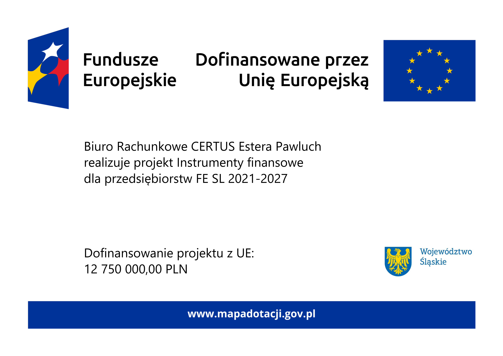

Prowadzenie ksiąg i ewidencji
Prowadzimy pełną księgowość oraz podatkową księgę przychodów i rozchodów, dbając o terminowe i poprawne księgowanie każdej operacji gospodarczej.
Biuro Rachunkowe CERTUS
„Nasze biuro to pewność i spokój dla Ciebie i dla Twojej firmy. Każdy klient jest dla nas partnerem, nie kolejnym numerem teczki.”

Od kilku lat zajmujemy się profesjonalną obsługą księgową, kadrową oraz podatkową. W ramach współpracy z naszą firmą doradzamy w sporządzaniu deklaracji VAT, PIT, jak również w sprawozdaniach GUS. Pomagamy także ze sprawami dotyczącymi dofinansowań z PFRON i OHP.
Tworzymy zgrany, prężnie działający, doświadczony i wykwalifikowany zespół. Zapewniamy obsługę dla klientów dowolnego rodzaju—dla dużych, średnich i małych firm, jak również dla osób prywatnych. W zakresie naszych świadczeń znajdują się także konsultacje dla osób przygotowujących się do stworzenia własnego biznesu. Doradzamy w wyborze formy opodatkowania oraz prowadzimy dalsze konsultacje podatkowe. Pomimo że nasze biuro znajduje się w Częstochowie, pomagamy wielu przedsiębiorcom z różnych branż na terenie całej Polski. Pod naszą pieczą rozwinęło się wiele początkujących biznesów.
W celu konsultacji zapraszamy Państwa do naszego nowoczesnego biura znajdującego się w budynku Panorama Business Park, gdzie z łatwością znajdziesz wolne miejsce parkingowe oraz przyjazną kadrę, która chętnie Cię obsłuży i odpowie na wszystkie pytania związane z Twoim biznesem lub sprawą. Lokalizacja biura jest przyjazna dla osób z niepełnosprawnościami; do biura z zewnątrz prowadzi łagodny podjazd, natomiast wewnątrz budynku można skorzystać z ogólnodostępnej windy.
W razie potrzeby są Państwo w stanie skontaktować się z nami poprzez e-mail lub telefon. Wszystkie dane kontaktowe zawarte są na dole strony oraz w sekcji Kontakt. We wspomnianej sekcji znajdują się również godziny pracy oraz mapa ułatwiająca dojazd.
Prowadzimy pełną księgowość oraz podatkową księgę przychodów i rozchodów, dbając o terminowe i poprawne księgowanie każdej operacji gospodarczej.
Przygotowujemy i składamy deklaracje ZUS oraz podatkowe do urzędu skarbowego, pilnując terminów i reprezentując Twoją firmę w kontaktach z urzędami.
Zajmujemy się umowami, listami płac i rozliczeniami PPK, a także bieżącą obsługą spraw pracowniczych Twojego zespołu.
Zakładamy i prowadzimy akta osobowe pracowników zgodnie z przepisami, pilnując terminów badań, szkoleń i okresów przechowywania dokumentacji.
Pomagamy zarejestrować działalność gospodarczą i doradzamy w wyborze formy opodatkowania najlepiej dopasowanej do Twojego biznesu.
Sporządzamy deklaracje PIT, CIT i VAT oraz inne rozliczenia podatkowe, dbając o zgodność z aktualnymi przepisami.
Przygotowujemy wnioski o dotacje, pożyczki i kredyty unijne, pomagając w skompletowaniu dokumentacji potrzebnej do ich uzyskania.
Doradzamy w bieżących sprawach podatkowych i pomagamy znaleźć rozwiązania dopasowane do sytuacji Twojej firmy.
Pomagamy w uzyskaniu dofinansowań z PFRON i OHP, prowadząc Cię przez cały proces składania wniosków.
Wspieramy firmy we wdrożeniu Krajowego Systemu e-Faktur, od konfiguracji po szkolenie zespołu z nowych zasad fakturowania.
Nasze biuro księgowe zapewnia klientom dokładne prowadzenie pełnej księgowości przy pomocy specjalistycznych programów księgowych. Pozwala to na kompleksową ewidencję wszystkich zdarzeń gospodarczych. Zajmujemy się między innymi:
Nasze usługi gwarantują szczegółową analizę finansową, jak również uzyskanie precyzyjnych danych potrzebnych do podejmowania skutecznych decyzji biznesowych. Dzięki naszej pracy firmy zyskują wzrost wiarygodności i przejrzystości finansowej.
Zapewniamy również ewidencję firm obejmującą Centralną Ewidencję i Informację o Działalności Gospodarczej (CEIDG), na którą składa się:
Wszystkie ewidencje prowadzone są elektronicznie przy użyciu profesjonalnych programów wiodących dostawców oprogramowań.
Umożliwiamy firmom zawieszenie, wznowienie lub zamknięcie działalności oraz pomagamy w rozliczaniu podatków i składek.
Firma CERTUS z chęcią pomaga swoim klientom w kwestii rozliczeń z ZUS i US. Dzięki nam przedsiębiorcy nie muszą obawiać się niedopilnowania terminów wpłat czy zmian w przepisach podatkowych. Z zaangażowaniem pomagamy w przygotowywaniu deklaracji czy korekt dokumentów. Przypominamy o terminach wpłat podatków, jak również doradzamy, jaka forma opodatkowania jest najoptymalniejsza dla danego przedsiębiorstwa.
Pomagamy naszym klientom prowadzić rozliczenia z ZUS, między innymi:
Jak również pomagamy w zakresie rozliczeń z US:
Nasze biuro rachunkowe oferuje kompleksową obsługę kadrowo-płacową, skierowaną do przedsiębiorców zatrudniających pracowników na podstawie umów o pracę oraz umów cywilnoprawnych. Usługa realizowana jest zgodnie z aktualnymi przepisami prawa pracy, ubezpieczeń społecznych oraz przepisami podatkowymi, z zachowaniem pełnej poufności i bezpieczeństwa danych.
Zakres obsługi kadrowej obejmuje:
W ramach obsługi płacowej realizujemy:
Przygotowujemy i przekazujemy deklaracje do ZUS i Urzędu Skarbowego, a także dokumenty roczne, takie jak PIT-11, PIT-4R i PIT-8AR. Oferujemy wsparcie w kontaktach z ZUS i US oraz pomoc podczas kontroli, zapewniając klientom spokój i terminowe wywiązywanie się z obowiązków pracodawcy.
W ramach usług świadczonych przez nasze biuro rachunkowe oferujemy kompleksowe i rzetelne prowadzenie akt osobowych pracowników, stanowiące jeden z podstawowych obowiązków każdego pracodawcy. Usługa realizowana jest w pełnej zgodności z obowiązującymi przepisami Kodeksu pracy, aktami wykonawczymi oraz regulacjami dotyczącymi ochrony danych osobowych, w tym RODO. Zapewniamy bezpieczeństwo, poufność oraz prawidłową organizację dokumentacji kadrowej.
Prowadzimy dokumentację pracowniczą obejmującą między innymi dokumenty związane z procesem zatrudnienia, przebiegiem stosunku pracy, zmianami warunków zatrudnienia, odpowiedzialnością porządkową oraz zakończeniem współpracy. Przygotowujemy i porządkujemy umowy o pracę, aneksy, zakresy obowiązków, oświadczenia pracowników, wnioski urlopowe, dokumenty dotyczące czasu pracy oraz świadectwa pracy.
Dbamy o terminowe uzupełnianie akt osobowych, ich właściwe przechowywanie oraz archiwizację przez okres wymagany przepisami prawa. Monitorujemy ważność badań lekarskich, szkoleń BHP oraz innych obowiązkowych dokumentów, informując pracodawcę o zbliżających się terminach i konieczności ich odnowienia. Zapewniamy również przygotowanie akt osobowych do kontroli przeprowadzanych przez Państwową Inspekcję Pracy, ZUS lub inne uprawnione instytucje.
Powierzenie prowadzenia akt osobowych naszemu biuru rachunkowemu pozwala pracodawcom ograniczyć ryzyko błędów formalnych, uniknąć sankcji oraz zaoszczędzić czas, Oferujemy indywidualne podejście, stałe wsparcie merytoryczne oraz bieżące informowanie o zmianach w przepisach prawa pracy.
Zapewniamy kompleksowe wsparcie w zakresie zakładania działalności gospodarczej, skierowane zarówno do osób rozpoczynających swoją pierwszą firmę, jak i przedsiębiorców planujących zmianę formy prowadzenia biznesu. Zapewniamy rzetelną pomoc na każdym etapie procesu rejestracji, minimalizując formalności i ryzyko błędów już na starcie działalności.
Pomagamy w prawidłowym wypełnieniu i złożeniu wniosku CEIDG, zgłoszeń do Urzędu Skarbowego oraz Zakładu Ubezpieczeń Społecznych. Doradzamy w zakresie wyboru kodów PKD, formy prowadzenia księgowości oraz obowiązków rejestracyjnych związanych z podatkiem VAT. Informujemy również o dostępnych ulgach i preferencjach, takich jak ulga na start czy preferencyjne składki ZUS.
Szczególną wagę przykładamy do pomocy przy wyborze optymalnej formy opodatkowania, dostosowanej do charakteru planowanej działalności, prognozowanych przychodów oraz sytuacji osobistej przedsiębiorcy.
Przedstawiamy różnice pomiędzy opodatkowaniem na zasadach ogólnych, podatkiem liniowym oraz ryczałtem od przychodów ewidencjonowanych, wskazując zalety i ograniczenia każdego rozwiązania. Dzięki temu klienci mogą podjąć świadomą decyzję, która pozwoli im efektywnie zarządzać obciążeniami podatkowymi.
Współpraca z naszym biurem na etapie zakładania działalności daje solidne podstawy do dalszego, bezpiecznego prowadzenia firmy. Oferujemy również dalszą obsługę księgową i podatkową, zapewniając ciągłość wsparcia, bieżące doradztwo oraz informowanie o zmianach w przepisach, które mogą mieć wpływ na rozwój przedsiębiorstwa.
Dostarczamy kompleksową obsługę w zakresie rozliczeń podatkowych, zapewniając bezpieczeństwo, terminowość i pełną zgodność z obowiązującymi przepisami prawa. Zajmujemy się zarówno rozliczeniami osób fizycznych, jak i przedsiębiorców prowadzących działalność gospodarczą, niezależnie od jej skali czy formy opodatkowania.
W ramach naszych usług przygotowujemy roczne deklaracje podatkowe PIT, CIT oraz VAT, korekty zeznań oraz inne dokumenty wymagane przez urzędy skarbowe. Pomagamy w rozliczeniach dochodów z różnych źródeł, w tym z pracy, działalności gospodarczej, najmu, praw autorskich czy dochodów zagranicznych. Dbamy o to, aby wszystkie ulgi, odliczenia i możliwości optymalizacji podatkowej były maksymalnie wykorzystane, zgodnie z obowiązującymi przepisami.
Nasze podejście jest indywidualne—każdemu klientowi poświęcamy czas na szczegółową analizę sytuacji podatkowej i doradzamy rozwiązania dopasowane do jego potrzeb. Dzięki bieżącemu monitorowaniu zmian w prawie podatkowym możemy szybko reagować na nowe regulacje, minimalizując ryzyko błędów i niepotrzebnych komplikacji.
Rozliczenia podatkowe realizujemy zarówno w formie tradycyjnej, jak i zdalnie, co pozwala klientom zaoszczędzić czas i wygodnie przekazać dokumenty. Zapewniamy pełną poufność danych oraz przejrzyste procedury, dzięki czemu proces rozliczeń jest prosty, szybki i bezstresowy.
Powierzając nam swoje sprawy podatkowe, zyskujesz pewność, że wszystkie rozliczenia zostały wykonane profesjonalnie, zgodnie z przepisami i w terminie. Naszym priorytetem jest nie tylko poprawne rozliczenie, ale także edukacja klienta—tłumaczymy wszelkie zawiłości podatkowe w przystępny sposób, aby każdy mógł świadomie zarządzać swoimi finansami.
Nasze biuro księgowe oferuje kompleksową usługę sporządzania wniosków o dotacje, pożyczki oraz kredyty unijne, skierowaną do przedsiębiorców planujących rozwój swojej działalności, inwestycje lub rozpoczęcie nowego projektu. Wspieramy klientów na każdym etapie procesu pozyskiwania środków finansowych—od analizy możliwości, przez przygotowanie dokumentacji, aż po złożenie wniosku i kontakt z instytucjami finansującymi.
Dzięki doświadczeniu oraz bieżącej znajomości programów unijnych i krajowych pomagamy dobrać najkorzystniejsze formy finansowania, dopasowane do profilu działalności, branży oraz indywidualnych potrzeb przedsiębiorcy. Przygotowujemy wnioski o dotacje bezzwrotne, preferencyjne pożyczki oraz kredyty unijne, dbając o ich zgodność z obowiązującymi wymogami formalnymi i merytorycznymi.
Sporządzamy komplet niezbędnych dokumentów, w tym biznesplany, prognozy finansowe, harmonogramy realizacji projektów oraz wymagane załączniki księgowe i podatkowe. Każdy wniosek opracowujemy rzetelnie i przejrzyście, zwiększając tym samym szanse na uzyskanie dofinansowania. W trakcie realizacji usługi zapewniamy wsparcie merytoryczne, odpowiadamy na pytania instytucji przyznających środki oraz pomagamy w ewentualnych korektach.
Współpraca z naszym biurem rachunkowym to gwarancja profesjonalizmu, oszczędności czasu oraz minimalizacji ryzyka błędów formalnych. Doskonale rozumiemy, jak skomplikowane i czasochłonne mogą być procedury związane z funduszami unijnymi, dlatego przejmujemy ten obowiązek, pozwalając klientom skupić się na prowadzeniu i rozwoju firmy.
Zapewniamy indywidualne podejście, poufność oraz pełne zaangażowanie na każdym etapie współpracy, pomagając skutecznie pozyskać środki na realizację planów biznesowych.
Oferujemy profesjonalne konsultacje podatkowe, które pomagają przedsiębiorcom i osobom prywatnym podejmować świadome decyzje finansowe oraz skutecznie zarządzać swoimi zobowiązaniami podatkowymi. Nasze biuro księgowe zapewnia rzetelne, aktualne i kompleksowe wsparcie w zakresie prawa podatkowego, dzięki czemu każdy klient może czuć się bezpiecznie i pewnie w swoich decyzjach finansowych.
W ramach konsultacji analizujemy indywidualną sytuację podatkową klienta, identyfikujemy obowiązki podatkowe oraz wskazujemy możliwości legalnej optymalizacji podatków. Doradzamy w zakresie podatków dochodowych (PIT i CIT), podatku VAT, podatków lokalnych, a także w kwestiach związanych z rozliczeniami międzynarodowymi. Pomagamy w interpretacji przepisów, przygotowaniu dokumentacji oraz w wyborze najkorzystniejszych form rozliczeń dla firm i osób prywatnych.
Nasze konsultacje pozwalają uniknąć błędów i niepotrzebnych sankcji ze strony urzędów skarbowych, a także wspierają długofalowe planowanie finansowe. Podczas spotkań szczegółowo tłumaczymy zawiłości przepisów podatkowych w sposób przystępny i zrozumiały, odpowiadając na wszystkie pytania i rozwiewając wątpliwości klientów. Oferujemy również praktyczne rekomendacje i strategie, które pozwalają optymalizować koszty i zwiększać bezpieczeństwo podatkowe.
Konsultacje podatkowe realizujemy w formie stacjonarnej w naszym biurze lub zdalnie, co daje pełną wygodę i oszczędność czasu. Zapewniamy indywidualne podejście do każdej sprawy, pełną poufność oraz profesjonalizm na każdym etapie współpracy.
Powierzając nam swoje konsultacje podatkowe, Klienci zyskują pewność, że wszystkie decyzje są podejmowane na podstawie aktualnych przepisów i doświadczenia ekspertów, co pozwala minimalizować ryzyko podatkowe i skutecznie planować rozwój swojej działalności.
Nasze biuro zapewnia kompleksową pomoc w zakresie pozyskiwania dofinansowań z PFRON (Państwowego Funduszu Rehabilitacji Osób Niepełnosprawnych) oraz OHP (Ochotniczych Hufców Pracy). Świadczymy profesjonalne wsparcie dla przedsiębiorców, którzy chcą korzystać z dostępnych form wsparcia finansowego przy zatrudnianiu osób niepełnosprawnych lub młodzieży wchodzącej na rynek pracy.
W ramach naszych usług przygotowujemy komplet dokumentacji niezbędnej do ubiegania się o dofinansowania, sporządzamy wnioski oraz pomagamy w wypełnieniu wszystkich formalności wymaganych przez instytucje finansujące. Doradzamy, jakie formy wsparcia będą najkorzystniejsze dla konkretnej firmy, uwzględniając jej strukturę zatrudnienia, profil działalności oraz specyficzne potrzeby pracowników.
Dofinansowania z PFRON mogą obejmować między innymi zwrot części wynagrodzeń, finansowanie przystosowania stanowisk pracy dla osób niepełnosprawnych oraz refundacje składek na ubezpieczenia społeczne. W przypadku OHP pomagamy w pozyskiwaniu wsparcia dla zatrudniania młodzieży, szkoleń zawodowych oraz staży, co pozwala rozwijać kompetencje pracowników i wspierać młodych ludzi w rozpoczęciu kariery zawodowej.
Dostarczamy kompleksową obsługę—od analizy możliwości pozyskania dofinansowania, przez przygotowanie dokumentów, aż po kontakt z instytucjami PFRON i OHP oraz monitorowanie procesu przyznawania środków. Dzięki naszej pomocy przedsiębiorcy mogą skupić się na prowadzeniu firmy, mając pewność, że wszystkie wnioski są przygotowane profesjonalnie i zgodnie z obowiązującymi przepisami.
Zapewniamy indywidualne podejście, pełną poufność oraz wsparcie na każdym etapie współpracy, dzięki czemu proces pozyskiwania dofinansowań jest prosty, szybki i bezstresowy. Powierzając nam tę usługę, zyskujesz pewność, że Twoja firma skutecznie korzysta ze wszystkich dostępnych możliwości finansowego wsparcia.
Biuro CERTUS oferuje kompleksowe wsparcie w zakresie wdrożenia Krajowego Systemu e-Faktur (KSeF), który od 2026 roku jest obowiązkowym narzędziem do wystawiania i przesyłania faktur w formie elektronicznej dla niemal wszystkich firm. Dzięki naszej pomocy proces adaptacji do nowych przepisów jest szybki, prosty i bezpieczny, a Twoja firma zyskuje pełną zgodność z obowiązującymi regulacjami podatkowymi.
W ramach usługi analizujemy potrzeby i strukturę działalności Klienta, aby przygotować optymalne rozwiązanie dostosowane do specyfiki firmy. Pomagamy w konfiguracji systemów księgowych oraz w integracji oprogramowania z KSeF, tak aby wystawianie i odbieranie faktur elektronicznych było intuicyjne i bezbłędne. Szkolimy pracowników i udzielamy praktycznych wskazówek dotyczących obsługi systemu, aby korzystanie z KSeF stało się naturalną częścią codziennej pracy.
Nasze wsparcie obejmuje także przygotowanie firmy do wymagań formalnych i technicznych KSeF, w tym konfigurację podpisów elektronicznych oraz nadanie uprawnień użytkownikom systemu. Doradzamy w zakresie przesyłania faktur, ich archiwizacji oraz kontroli poprawności dokumentów, minimalizując ryzyko błędów i nieprawidłowości w rozliczeniach podatkowych.
Wdrożenie KSeF z naszym biurem rachunkowym to gwarancja profesjonalizmu, oszczędności czasu i bezpieczeństwa. Zapewniamy pełną poufność danych, indywidualne podejście oraz bieżące wsparcie na każdym etapie procesu wdrożeniowego. Naszym celem jest, aby Twoja firma mogła w pełni wykorzystać możliwości nowego systemu e-faktur, poprawiając efektywność księgowości i spełniając wymogi prawne w sposób bezstresowy i bezproblemowy.
Powierzając nam wdrożenie KSeF, zyskujesz pewność, że Twoje faktury elektroniczne są zgodne z przepisami, a proces ich obsługi jest szybki, nowoczesny i w pełni zautomatyzowany.
W zakres naszych świadczeń wchodzą: prowadzenie ksiąg i ewidencji, prowadzenie rozliczeń z ZUS i US, obsługa kadrowo-płacowa, prowadzenie akt osobowych, zakładanie działalności gospodarczej, pomoc przy wyborze formy opodatkowania, rozliczenia podatkowe, sporządzanie wniosków o dotacje oraz pożyczki czy kredyty unijne, konsultacje podatkowe, dofinansowania PFRON, OHP oraz pomoc w wdrożeniu KSeF. Szczegółowe informacje znajdują się w sekcji Oferta.
Cena świadczeń zależna jest od dziedziny i zakresu świadczeń interesanta.
W celu ustalenia terminu spotkania należy wysłać zapytanie poprzez e-mail lub zapytać się podczas rozmowy telefonicznej. Prosimy o wcześniejsze przygotowanie kilku dogodnych terminów, gdyż może dojść do sytuacji, gdzie termin, o który Państwo pytają jest już zajęty.
Nasze biuro obsługuje klientów we wszystkie dni robocze w godzinach od 7:00 do 15:00. W wypadku zmiany godzin przyjmowania w danym dniu zostanie wcześniej wystawiona informacja na stronie lub na naszych mediach społecznościowych. W soboty, niedziele i święta biuro jest zamknięte. W wypadku wysłania wiadomości po godzinach obsługi klienta zwykle odpowiedź zostaje nadana następnego dnia roboczego.
W celu przekazania dokumentów do naszego biura mogą Państwo posłużyć się drogą elektroniczną, gdzie przesyłają Państwo skany potrzebnych, odpowiednio podpisanych dokumentów na nasz adres e-mail. Innym sposobem jest wysłanie dokumentów drogą pocztową lub własnoręczne dostarczenie ich do biura.
| Poniedziałek–piątek | Sobota–niedziela |
|---|---|
| 07:00–15:00 | Zamknięte |